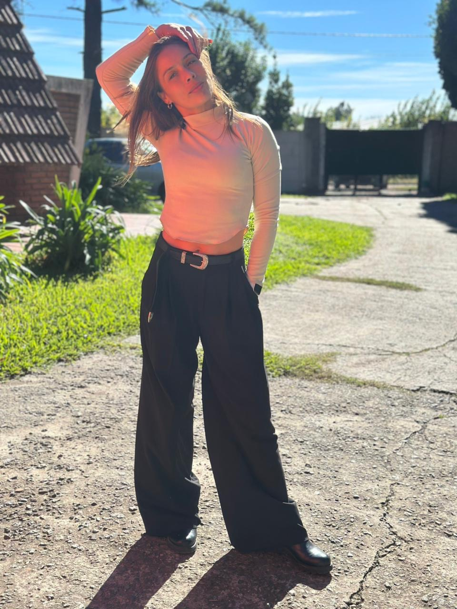

Más fuerte. Más segura. Más vos.
Desarrollé mi Método Raíz para que puedas perder grasa, ganar músculo y recuperar energía. Pensado para tu cuerpo después de los 35.
- Entrenamiento adaptado a tus hormonas y tu edad
- Sin pasar hambre ni tener alimentos prohibidos
- Respetando tus tiempos y ritmo de vida
¿Te suena algo de esto?
-
Comés bien, te esforzás, y la balanza no se mueve.
-
Probaste dietas, apps, planes gratis y clases colectivas, y siempre terminás donde empezaste.
-
Sentís que tu cuerpo ya no responde como antes de los 35.
-
La comida te genera ansiedad y culpa, y estás cansada de vivir con ese ruido mental todo el día.
-
No tenés tiempo para entrenar cinco días ni para cocinar dos horas.
-
Y lo peor: dejaste de confiar en vos misma.
No es falta de voluntad.
Es que nadie te explicó qué cambia en tu cuerpo después de los 35. La resistencia a la insulina, el hipotiroidismo, el SOP (síndrome de ovario poliquístico) o la perimenopausia cambian cómo tu cuerpo usa la energía, y una rutina genérica no tiene eso en cuenta.
Por eso desarrollé el Método Raíz: fuerza, alimentación flexible y seguimiento real, pensados para lo que te está pasando. No es magia ni es rápido. Es un método que por fin te tiene en cuenta.

Entrenar perfecto no existe. Entrenar para tu etapa, sí.
Soy mamá de dos y nunca dejé de entrenar. En el embarazo y el posparto lo aprendí en mi propio cuerpo: el movimiento se adapta a la etapa, no al revés.
Hoy acompaño a mujeres +35 a recomponer su cuerpo con sus cambios hormonales a favor, sin vivir a dieta.
Prof. Jimena Ibañez
Profesora Nacional de Educación Física · Entrenadora de fuerza · Especialista en salud femenina
- Recomposición corporal
- Resistencia a la insulina y SOP
- Hipotiroidismo
- Perimenopausia y menopausia
- Entrenamiento adaptado al ciclo hormonal
- Hábitos sostenibles
- En casa o en el gimnasio
- Agendas con poco tiempo
Lo que dicen las que ya entrenan conmigo
Desde hace 2 años Jimena y yo trabajamos juntas, me siento una persona disciplinada, más saludable, con más energía y consciente de mis capacidades físicas.
A mí me encanta entrenar con vos porque siempre estás atenta a cada movimiento, ayudándome para que no me lastime. Sos muy dedicada y una excelente profesional.
Después de dos años entrenando con vos me siento mucho más fuerte y pude lograr algo que me costaba muchísimo: ser constante. Siendo mamá, entrenar desde casa me facilitó un montón.
Gracias a Jimena, que cambió mi forma de entrenar y mi estilo de vida. Desde Argentina me manda videos y me exige mandarle todo para revisar que esté haciéndolo bien.
Mi experiencia fue muy buena y muy eficiente, vi muchos resultados. Las planificaciones un 1000 y muy personalizadas. Realmente muy profesional en su trabajo.
Hoy no solo cambió mi cuerpo: cambió mi forma de cuidarme. Me siento más fuerte, con más energía y en paz con mis hábitos. Jimena no solo me entrenó, me enseñó a entenderme.
El proceso, paso a paso
Es una conversación gratuita de 30min donde revisamos tus objetivos: qué probaste antes, qué te funcionó y qué no, tu historial de entrenamiento y tu situación de salud, incluidas las condiciones hormonales que cambian la forma de entrenar.
Hacemos un estudio de composición corporal, una evaluación física y una foto inicial. Ese punto de partida es lo que después te permite ver el progreso real, en vez de discutir con la balanza.
Mesociclo por bloques con autorregulación por esfuerzo percibido, y educación alimentaria flexible y adaptada a tu gasto real, para que aprendas a comer y no sigas una dieta cerrada. Pensado para la semana que realmente tenés, no para una semana ideal que no existe.
Cada semana me pasás tu reporte y tus videos entrenando, y cada mes revisamos medidas, cargas y hábitos para ajustar el plan con esos datos. Es la diferencia entre un acompañamiento y un PDF con ejercicios.
Dos formas de hacer el Método Raíz
-
01
Entrenamiento adaptado a gimnasio o en casa
Tu rutina se arma sobre tu día a día real, entrenes donde entrenes.
-
02
Alimentación flexible
Ajustada a tus horarios, tus gustos y tus alergias o intolerancias. Comidas simples, que resuelven en minutos.
-
03
Tu entrenadora en WhatsApp
Escribime cuando lo necesites. Estoy del otro lado para responderte y sostenerte en el día a día.
-
04
Reporte semanal
Cada semana completás una planilla contándome cómo venís, y me mandás videos entrenando para que te corrija la técnica.
-
05
Revisión mensual con datos reales
Cada mes reviso tus fotos, medidas y peso. Ajusto el plan con esos datos, no a ojo.
-
06
Videollamada mensual 1 a 1
Para entender el porqué de cada ajuste. No busco que me obedezcas: busco que aprendas el proceso.
-
07
Comunidad de mujeres
Compartir el camino con otras mujeres que van en la misma dirección es lo que sostiene el compromiso en el tiempo.
Método Raíz + En vivo
Con clases en vivoTodo el programa,
más yo del otro lado
¿Querés saber más?
Quiero sumar las clases-
01
Entrenamiento adaptado a gimnasio o en casa
Tu rutina se arma sobre tu día a día real, entrenes donde entrenes.
-
02
Alimentación flexible
Ajustada a tus horarios, tus gustos y tus alergias o intolerancias. Comidas simples, que resuelven en minutos.
-
03
Tu entrenadora en WhatsApp
Escribime cuando lo necesites. Estoy del otro lado para responderte y sostenerte en el día a día.
-
04
Reporte semanal
Cada semana completás una planilla contándome cómo venís, y me mandás videos entrenando para que te corrija la técnica.
-
05
Revisión mensual con datos reales
Cada mes reviso tus fotos, medidas y peso. Ajusto el plan con esos datos, no a ojo.
-
06
Videollamada mensual 1 a 1
Para entender el porqué de cada ajuste. No busco que me obedezcas: busco que aprendas el proceso.
-
07
Comunidad de mujeres
Compartir el camino con otras mujeres que van en la misma dirección es lo que sostiene el compromiso en el tiempo.
-
08
Tu entrenadora en vivo, mientras entrenás
Una clase individual por videollamada, con vos entrenando y yo del otro lado corrigiéndote en el momento.
¿Empezamos?
Contame un poco de tu situación y tus objetivos, y te respondo personalmente.